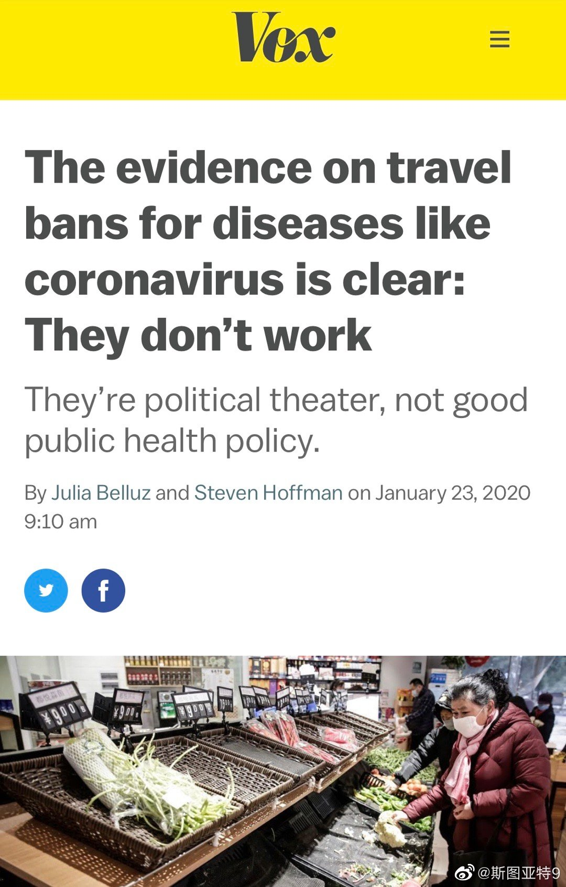

总结一下互联网上传播的信息：武汉医院的病房都住满了，过道都挤满了人等着治，还有好多已经被打发回家的。这么多疑似患者，只有500多个确诊，0疑似，是因为试剂盒不够。

斯图亚特9
2020-01-23

斯图亚特9
2020-01-23
在微博和微信朋友圈完全看不到对封城的批评。是大家都赞同这一决策，还是批评意见都被和谐了？境外媒体还是有批评声的。Vox这篇文章就直接说“这是政治秀，不是好的公共健康政策”。WHO代表也没有回答这一政策是否有效。
- 
斯图亚特9
2020-01-23
网上几条批评那条财新访谈的社交媒体截图，都在说大陆科研水平不比香港差云云。怎么就没有一条评论一下他说的“传播源已经全面铺开了”，“要做流行病学调查已经做不了了”，“感染规模是SARS德十倍起跳”？这些人能不能放一放人民群众不关心的细枝末节，澄清一下大家关心的问题？